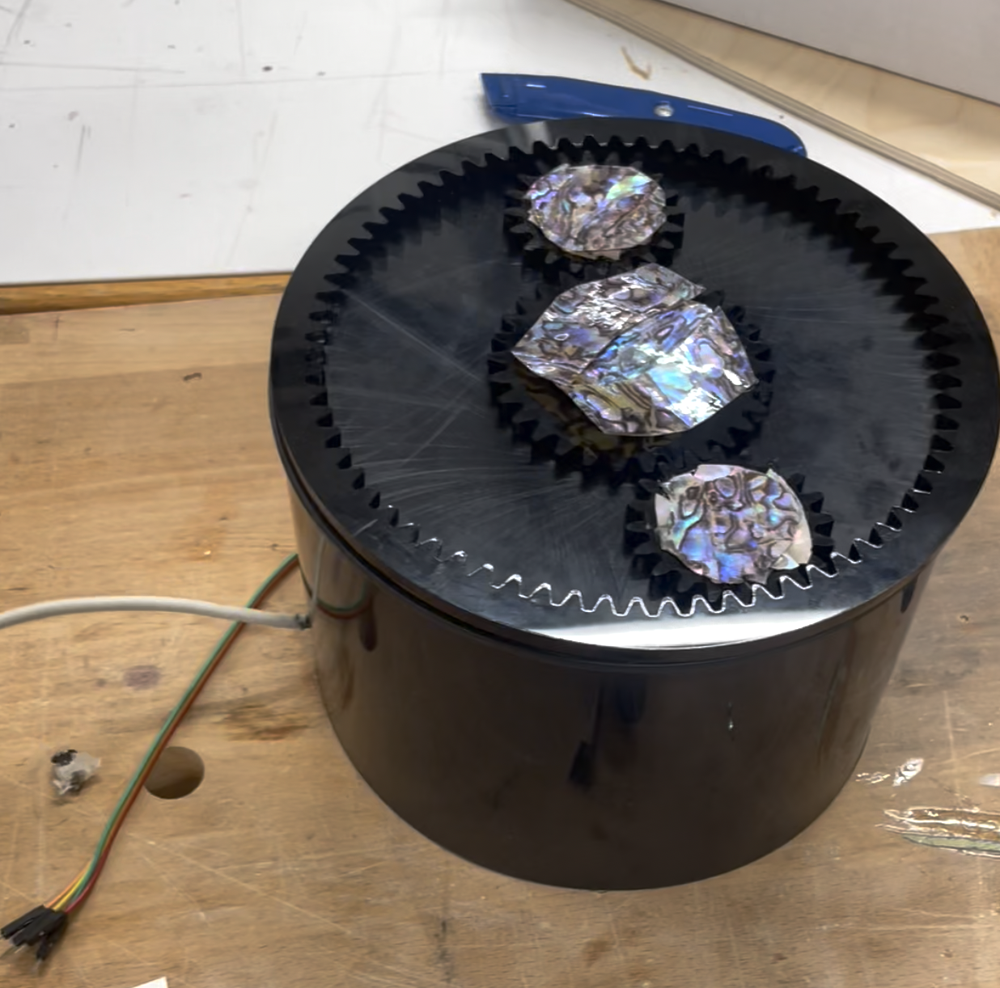
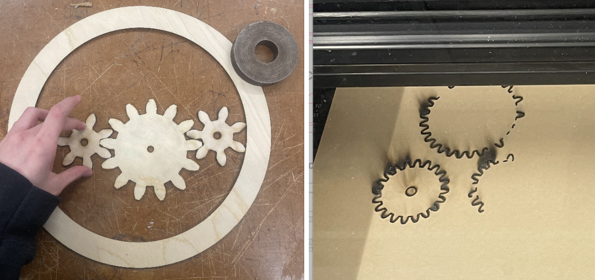
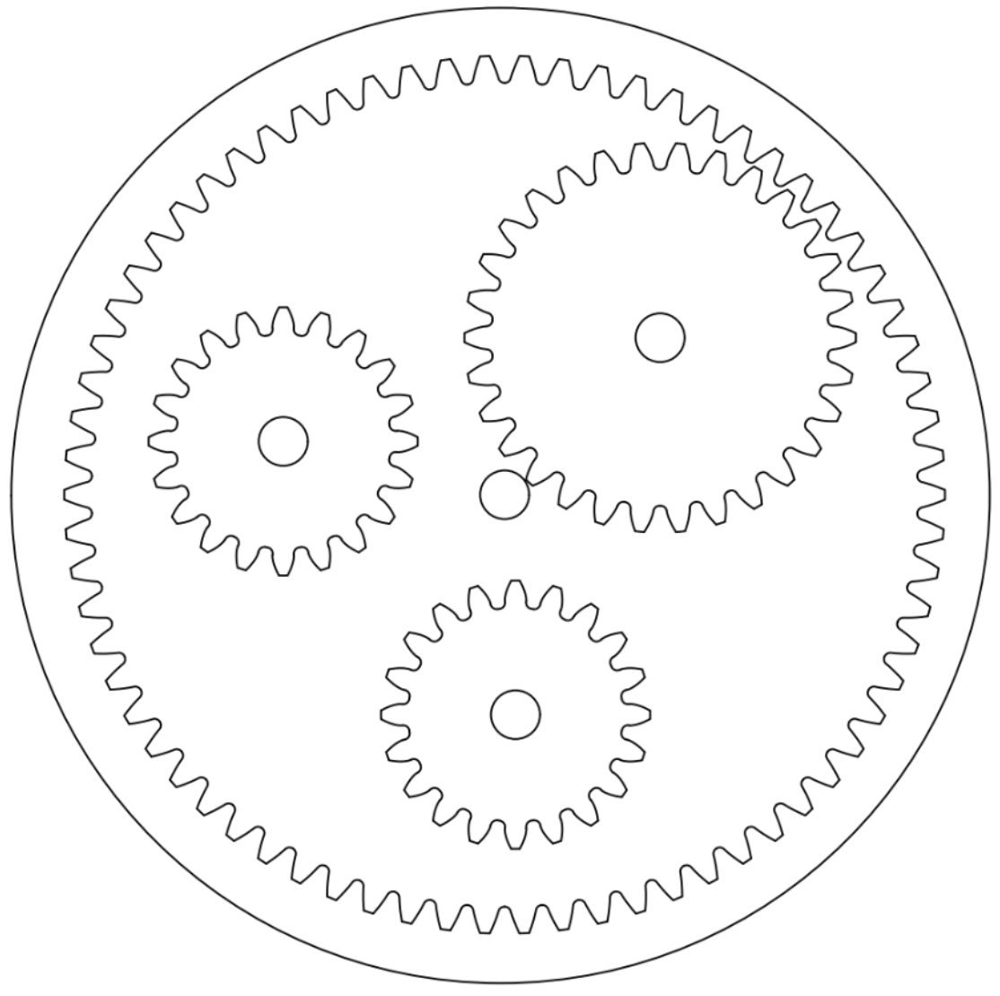
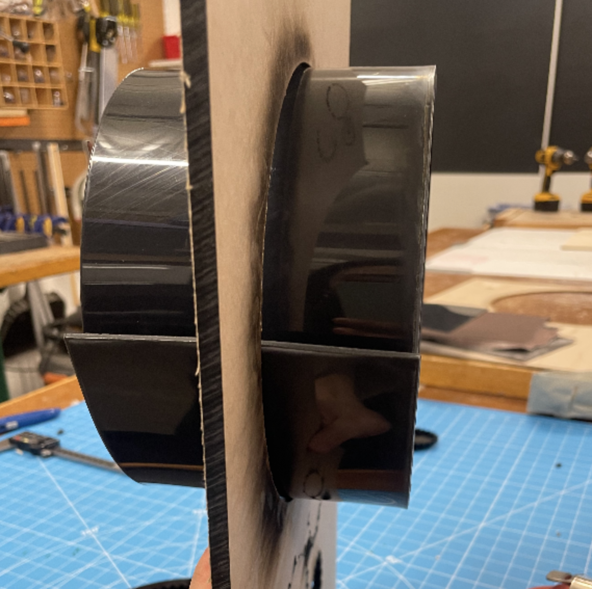
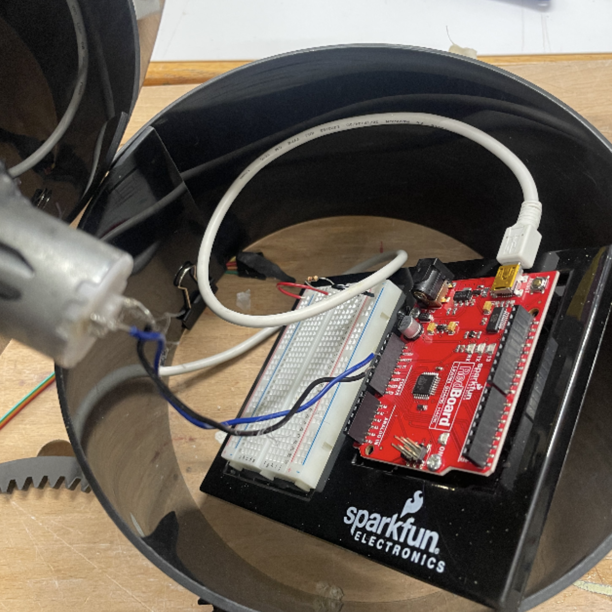

<h1><p style="font-family:georgia; font-size:x-large"> <i><b> LACQUER PORTAL </i></b> </p> </h1>
<p style="font-family:'Gill Sans', 'Gill Sans MT', Calibri, 'Trebuchet MS', sans-serif"> this week was such a whirlwind omg. i made a cylinder with a planetary gear system on top. i decorated the gears, which spun at high speed and created an optical illusion (?) but it was shiny and pretty to look at. i named it 'lacquer portal' because the black + the pearlescent materials remind me of lacquerware</p>
<h2><p style="font-family:georgia; font-size:x-large"> <i><b> results </i></b> </p> </h2>
<p style="font-family:'Gill Sans', 'Gill Sans MT', Calibri, 'Trebuchet MS', sans-serif">
<video width="500" height="500" controls>
<source src="fast_lacquer_portal.mp4" type="video/mp4">
</video>

<h3><p style="font-family:georgia; font-size:x-large"> <i><b> construction </i></b> </p> </h3>
<p style="font-family:'Gill Sans', 'Gill Sans MT', Calibri, 'Trebuchet MS', sans-serif"> first, i made the gears. my original thought was to make three gears, one big one in the middle controlled by the motor, and a circle to hold them in. i made about four different iterations of gears, some of which are pictured below. on the third iteration, my file was saved as a 3-d image instead of as a drawing, so the laser cutter cut twice for every mark, and it didn’t cut continuous lines. my final iteration ended up being saved as a drawing, which solved this problem. i also created an internal gear for the inside gears to have something to grip onto as they spin around, which worked much better than a circle would have. </p>


<p style="font-family:'Gill Sans', 'Gill Sans MT', Calibri, 'Trebuchet MS', sans-serif"> second, i made the plate for the gear, which was just an 18.5 cm circle with a .95 cm hole in the center. I attached the internal gear to the plate. </p>
<p style="font-family:'Gill Sans', 'Gill Sans MT', Calibri, 'Trebuchet MS', sans-serif"> third, i made the body of the cylinder. i cut a 12cmx59cm rectangle, and used the heat gun to mold it into a cylinder. after molding, i realized i needed a hole for my cable, so i drilled a bunch of tiny holes then connected them and had a hole big enough for my cable. </p>

<p style="font-family:'Gill Sans', 'Gill Sans MT', Calibri, 'Trebuchet MS', sans-serif"> finally, i attached the motor. i soldered the wires to the motor, then i tried to haphazardly hot glue the motor through the hole in the gear, which did not work (surprise surprise), and i pulled it out which reminded me of a dr pimple popper video. after that, i found a small washer-type object that would fit pretty well around the motor. i attached that to the motor, securing it using hot glue, then i attached the secured motor to the gear hole using a lot more glue. it was a bit tricky because the gear had to become glued to the hole of the gear and the hole of the plate without touching the plate. it worked!! </p>
<h4><p style="font-family:georgia; font-size:x-large"> <i><b> testing and making it go spin spin </i></b> </p> </h4>
<p style="font-family:'Gill Sans', 'Gill Sans MT', Calibri, 'Trebuchet MS', sans-serif"> i powered up the gear using the techniques we learned in class (seen below). the gear would only spin when the motor was pushed through the plate, or else it would drag down the gear onto the plate and the gear couldn’t spin freely. to address this, i tried duct tape (to no avail) then hot glued the motor to the bottom of the plate while pushing really hard. this worked! now my gear spins freely. </p>

<p style="font-family:'Gill Sans', 'Gill Sans MT', Calibri, 'Trebuchet MS', sans-serif"> i played around with a potentiometer to modify the speed, but after installing it onto the circuit, i realized full throttle is the only way to go. this wasn’t really a choice, as for some reason, when i put the potentiometer on the board, the circuit stopped working. i placed my breadboard inside of my cylinder, then placed the lid on top of the cylinder. finally, my sculpture was complete! </p>
<p style="font-family:'Gill Sans', 'Gill Sans MT', Calibri, 'Trebuchet MS', sans-serif"> here is a longer video that shows the portal from start to finish!!! </p>
<video width="500" height="900" controls>
<source src="lacquer portal feature film.mp4" type="video/mp4">
</video>